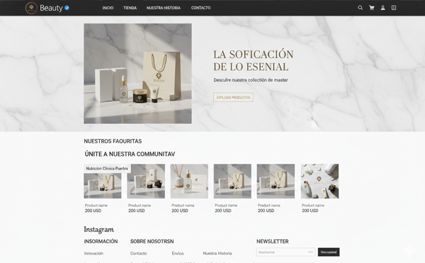
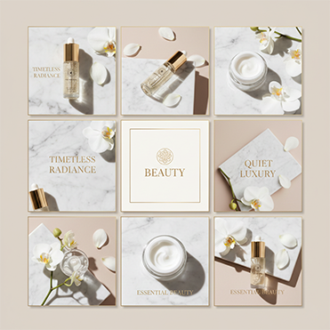
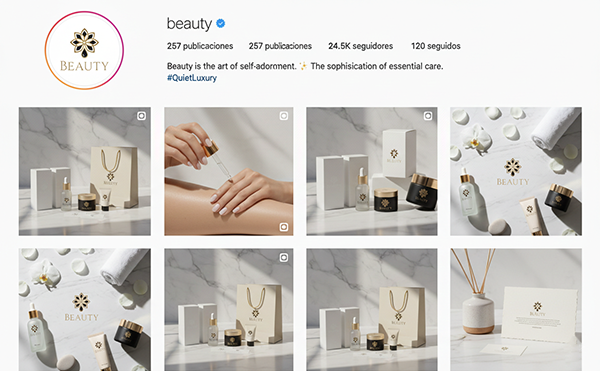
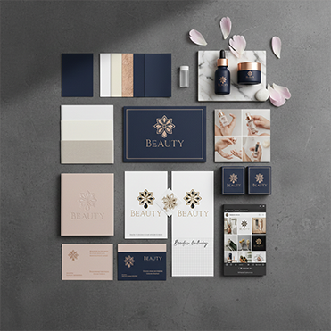

← Volver al portfolio
Branding · Social · Web
Marca Premium · Beauty
Reposicionamiento de una marca de belleza como opción premium en su sector.
- Cliente
- Beauty Studio Premium
- Sector
- Beauty & Wellness
- Servicios
- Branding, Social Media, Web
- Año
- 2025

El desafío
La marca necesitaba diferenciarse de la competencia local y justificar precios premium sin perder clientes actuales. Su percepción visual era genérica y no transmitía el nivel de servicio ofrecido.
La solución
Desarrollamos un sistema de identidad sofisticado, una dirección fotográfica editorial y una experiencia web tipo revista. La comunicación social se ordenó con templates y criterios de contenido consistentes.
Resultados
- +40% engagement en 90 días
- 0 → 12k seguidores orgánicos
- Aumento del ticket promedio 35%
- Retención de 90% de clientes existentes




¿Querés construir una marca que eleve su categoría?
Contanos tu proyecto